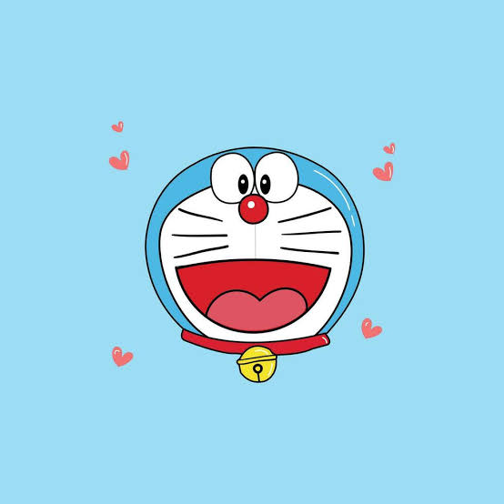

Doraemon — A Friend from the Future
Doraemon is a blue robotic cat from the future who lives with the Nobi family. He uses gadgets from his four-dimensional pocket to help Nobita solve everyday problems. Although his gadgets sometimes lead to unexpected trouble, he always cares deeply about Nobita. He also loves dorayaki, a Japanese treat filled with sweet red bean paste.